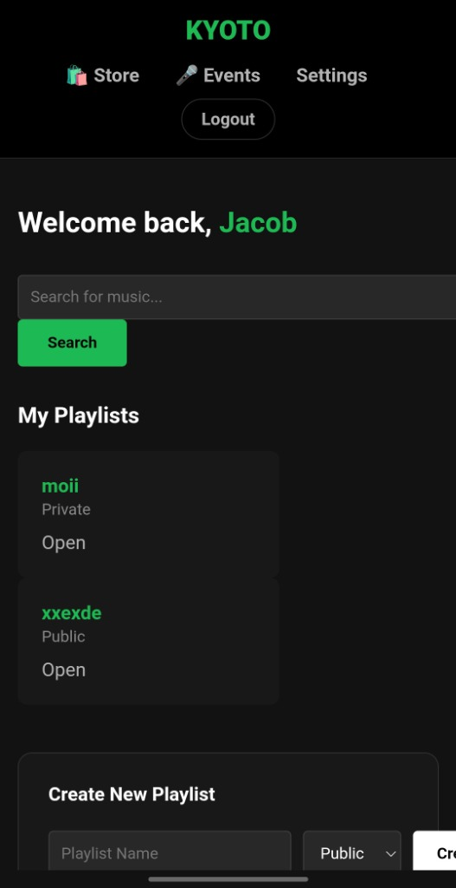

Fret.io is an interactive, low-latency utility designed specifically for modern stringed instrumentalists. Built to decode complex fingerings, map out alternative modal scales, and provide dynamic chord visualization, the platform helps musicians explore system topologies of the fretboard directly on their Android devices. Focused on high-performance rendering and a minimal cognitive load user interface.
Welcome to my digital workshop :)


Kyoto Music
A full-stack audio experience. Seamless streaming, dynamic routing, and a front-end that looks as crisp as a freshly tuned Stratocaster.
View Project↑ Export SVG
Should designers code?
😊
Detach component
🎸
Kutloano
Crafting seamless Web and Android apps is my bread and butter. When I'm not deep in Kotlin or Java, I'm usually dialing in the hours on my guitar. I'm here to build cool stuff.
Read about meHello! I'm Kutloano, a Computer Science student specializing in native Android experiences and robust full-stack web platforms. I spend my time optimizing system topologies, writing complex object-oriented logic, and pretending my code compiles on the first try.